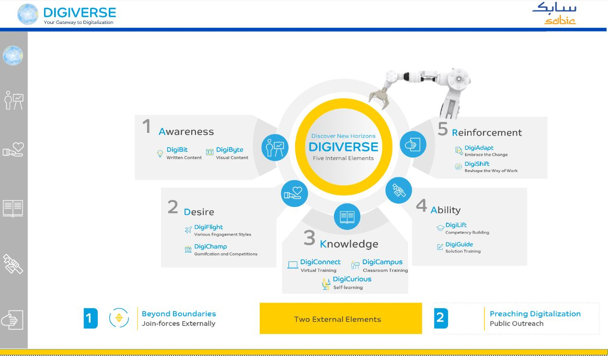

Digiverse Dashboard
Welcome to the Digiverse Dashboard - A Digiverse Dashboard is a centralized digital tool designed to provide a comprehensive overview of an organization’s digital ecosystem. It offers insights into various aspects of digital transformation, online presence, customer engagement, marketing performance, and digital operations. The Digiverse Dashboard is used by digital marketing teams, IT managers, and business leaders to monitor, analyze, and optimize their digital strategies and initiatives.

Training Analytics
This dashboard is designed to help HR managers, training coordinators, and organizational leaders track and analyze various training metrics, enabling them to make data-driven decisions to improve employee development and organizational performance.
Semi-Annual Employment
A Semi-Annual Employment Dashboard is a comprehensive tool designed to provide insights into various employment metrics and workforce trends over a six-month period.
Project Management
A Project Management Dashboard is an essential tool for project managers, teams, and stakeholders to monitor, manage,and report on the progress of various projects within an organization.
Hiring Status
This dashboard offers real-time insights into various aspects of hiring, such as job openings, candidate pipelines, interview stages, time-to-hire, and overall recruitment efficiency.
Quran Sessions
This dashboard aims to provide real-time information on various aspects of the course, such as participant engagement, academic performance, participation, and resources used, which facilitates data-driven decision-making to improve future courses.
Transportation Management
This dashboard is utilized by logistics managers, supply chain professionals, and transportation coordinators to monitor and optimize various aspects of transportation, including fleet management, route planning, freight costs, delivery performance, and overall logistics efficiency.
Project Management
This dashboard aims to provide real-time information on various aspects of the course, such as participant engagement, academic performance, participation, and resources used, which facilitates data-driven decision-making to improve future courses.
HR Attrition
This dashboard is used to monitor, analyze, and understand the patterns and reasons behind employee departures, which is crucial for improving employee retention strategies and organizational health.